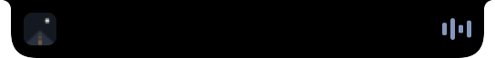

System HUDs, reimagined새로워진 시스템 HUDシステム HUD を、再発明。重新设计的系统 HUDLos HUD del sistema, reinventadosSystem-HUDs, neu gedachtLes HUD système, réinventés
Volume, brightness (even external displays over DDC), keyboard backlight, charging and AirPods battery, right in the notch.
볼륨, 밝기(DDC 외부 모니터 포함), 키보드 백라이트, 충전, AirPods 배터리까지 노치 안에서.
音量、明るさ（DDC 対応の外部ディスプレイも）、キーボードバックライト、充電、AirPods のバッテリーまで、ノッチの中に。
音量、亮度（包括通过 DDC 连接的外接显示器）、键盘背光、充电状态和 AirPods 电量，都在刘海里显示。
Volumen, brillo (incluso en pantallas externas mediante DDC), retroiluminación del teclado, carga y batería de los AirPods, todo en el notch.
Lautstärke, Helligkeit (auch externe Bildschirme über DDC), Tastaturbeleuchtung, Laden und AirPods-Akku – direkt in der Notch.
Volume, luminosité (même sur les écrans externes compatibles DDC), rétroéclairage du clavier, charge et batterie des AirPods, directement dans l’encoche.
Agents & terminals, in your notch노치로 오는 에이전트·터미널 알림エージェントとターミナルが、ノッチに。代理与终端通知，直达刘海Agentes y terminales, en tu notchAgenten & Terminals, in deiner NotchAgents & terminaux, dans votre encoche
Connect Claude Code, Codex, Gemini CLI or OpenCode with one click. Agents in Muxy, cmux and herdr, and bells from tmux and WezTerm, show up without a hook. Click a notice to jump to its terminal, pane or tab. Any local script can send one too.
Claude Code, Codex, Gemini CLI, OpenCode는 클릭 한 번으로 연결되고, Muxy·cmux·herdr 안의 에이전트와 tmux·WezTerm 벨은 훅 없이 뜹니다. 알림을 누르면 그 터미널, 창, 탭으로 바로 갑니다. 어떤 로컬 스크립트든 알림을 보낼 수 있어요.
Claude Code、Codex、Gemini CLI、OpenCode はワンクリックで接続。Muxy・cmux・herdr のエージェントや tmux・WezTerm のベルは、フックなしで表示されます。通知をクリックすると、そのターミナル・ペイン・タブへ移動します。ローカルのスクリプトからも送れます。
Claude Code、Codex、Gemini CLI 和 OpenCode 一键即可连接；Muxy、cmux、herdr 中的代理以及 tmux、WezTerm 的响铃无需钩子就会显示。点击通知即可跳到对应的终端、窗格或标签页。任何本地脚本也能发送通知。
Conecta Claude Code, Codex, Gemini CLI u OpenCode con un clic. Los agentes de Muxy, cmux y herdr, y las campanas de tmux y WezTerm, aparecen sin ningún hook. Haz clic en un aviso para ir a su terminal, panel o pestaña. Cualquier script local también puede enviar uno.
Verbinde Claude Code, Codex, Gemini CLI oder OpenCode mit einem Klick. Agenten in Muxy, cmux und herdr sowie Bell-Signale aus tmux und WezTerm erscheinen ganz ohne Hook. Ein Klick auf einen Hinweis bringt dich zu seinem Terminal, Bereich oder Tab. Auch jedes lokale Skript kann einen senden.
Connectez Claude Code, Codex, Gemini CLI ou OpenCode en un clic. Les agents de Muxy, cmux et herdr, ainsi que les sonneries de tmux et WezTerm, s’affichent sans aucun hook. Cliquez sur une alerte pour retrouver son terminal, son panneau ou son onglet. N’importe quel script local peut aussi en envoyer une.
Claude CodeNeeds your permission to run a command명령을 실행하려면 허락이 필요해요コマンドの実行に許可が必要です需要你的许可才能执行命令Necesita tu permiso para ejecutar un comandoBraucht deine Erlaubnis, um einen Befehl auszuführenA besoin de votre autorisation pour exécuter une commande
Sneak peek & lyrics미리보기와 가사スニークピークと歌詞预览与歌词Vista previa y letrasVorschau & SongtexteAperçu & paroles
When the track changes the title slides out for a moment, and the line being sung can stay under the notch while you work.
곡이 바뀌면 제목이 잠깐 나왔다 사라지고, 원하면 지금 부르는 가사가 작업 중에도 노치 아래에 흐릅니다.
曲が変わると、タイトルが一瞬スライドして現れます。今流れている歌詞も、作業中ずっとノッチの下に表示できます。
曲目切换时标题会短暂滑出，正在演唱的歌词也可以留在刘海下方，陪你一起工作。
Cuando cambia la canción, el título aparece un momento y, si quieres, la letra que se está cantando se queda bajo el notch mientras trabajas.
Wenn sich der Titel ändert, gleitet er kurz heraus, und die aktuelle Textzeile kann während der Arbeit unter der Notch bleiben.
Quand le morceau change, le titre apparaît un instant, et la ligne chantée peut rester sous l’encoche pendant que vous travaillez.

Calendar & reminders캘린더와 미리 알림カレンダーとリマインダー日历与提醒事项Calendario y recordatoriosKalender & ErinnerungenCalendrier & rappels
This week, today's events and reminders to tick off. Five minutes before an event the notch gives you a heads-up, and one click joins Zoom, Meet, Teams and other calls.
이번 주, 오늘 일정, 완료할 미리 알림. 일정 5분 전에 노치가 알려 주고, Zoom·Meet·Teams 같은 화상 회의는 클릭 한 번으로 참가합니다.
今週の予定、今日の予定、完了にできるリマインダー。予定の5分前にノッチがお知らせし、Zoom・Meet・Teams などのビデオ会議にはワンクリックで参加できます。
本周安排、今日日程和可勾选的提醒事项。日程开始前 5 分钟刘海会提醒你，Zoom、Meet、Teams 等视频会议一键即可加入。
Esta semana, los eventos de hoy y recordatorios para marcar. Cinco minutos antes de un evento el notch te avisa, y te unes a llamadas de Zoom, Meet, Teams y otras con un clic.
Diese Woche, die heutigen Termine und Erinnerungen zum Abhaken. Fünf Minuten vor einem Termin meldet sich die Notch, und Zoom-, Meet-, Teams- und andere Calls trittst du mit einem Klick bei.
Votre semaine, les évènements du jour et des rappels à cocher. Cinq minutes avant un évènement, l’encoche vous prévient, et vous rejoignez Zoom, Meet, Teams et d’autres appels en un clic.
Camera & mic indicator카메라·마이크 표시カメラ・マイクのインジケーター相机与麦克风提示Indicador de cámara y micrófonoKamera- & MikrofonanzeigeIndicateur caméra & micro
A dot on the notch whenever any app is using your camera or microphone, so nothing listens in unnoticed.
어떤 앱이든 카메라나 마이크를 쓰는 동안 노치에 표시가 뜹니다. 몰래 듣는 앱은 없어요.
どのアプリかがカメラやマイクを使っているとき、ノッチに点が表示されます。こっそり使われることはありません。
任何应用使用相机或麦克风时，刘海上都会出现一个小点，不会有应用偷偷窃听。
Un punto en el notch cuando cualquier app usa tu cámara o micrófono, así nada te escucha sin que lo notes.
Ein Punkt auf der Notch, sobald eine App deine Kamera oder dein Mikrofon nutzt, damit nichts unbemerkt mithört.
Un point sur l’encoche dès qu’une app utilise votre caméra ou votre microphone, pour qu’aucune écoute ne passe inaperçue.
Screen recording화면 녹화画面収録屏幕录制Grabación de pantallaBildschirmaufnahmeEnregistrement de l’écran
Start it from Tools; a red dot and timer stay on the notch, and the video lands on the shelf when you stop.
도구 탭에서 시작하면 노치에 빨간 점과 시간이 남고, 멈추면 영상이 선반에 들어갑니다.
ツールタブから開始すると、ノッチに赤い点と時間が表示され、停止すると動画がシェルフに届きます。
在“工具”中开始录制，刘海上会留下红点和计时，停止后视频会自动进入架子。
Inícialo desde Herramientas; un punto rojo y un cronómetro se quedan en el notch, y el vídeo cae en el estante cuando lo detienes.
Starte sie über Werkzeuge; ein roter Punkt und ein Timer bleiben auf der Notch, und das Video landet beim Stoppen in der Ablage.
Lancez-le depuis Outils ; un point rouge et un chronomètre restent sur l’encoche, et la vidéo atterrit sur l’étagère à l’arrêt.
Clipboard & notes클립보드와 메모クリップボードとメモ剪贴板与便笺Portapapeles y notasZwischenablage & NotizenPresse-papiers & notes
Search what you copied and copy it again in one click. Jot notes without opening another app.
복사한 내용을 검색해 한 번에 다시 복사하고, 다른 앱 없이 바로 메모하세요.
コピーした内容を検索して、ワンクリックで再コピー。別のアプリを開かずにメモも書けます。
搜索你复制过的内容，一键再次复制；无需打开其他应用即可随手记笔记。
Busca lo que copiaste y vuelve a copiarlo con un clic. Anota algo sin abrir otra app.
Durchsuche, was du kopiert hast, und kopiere es mit einem Klick erneut. Notiere dir etwas, ohne eine weitere App zu öffnen.
Recherchez ce que vous avez copié et recopiez-le en un clic. Notez vos idées sans ouvrir une autre app.
Weather & downloads날씨와 다운로드天気とダウンロード天气与下载Tiempo y descargasWetter & DownloadsMétéo & téléchargements
Today's weather in the header, and a nudge when a download finishes. Screenshots drop onto the shelf by themselves.
헤더에 오늘 날씨를, 다운로드가 끝나면 살짝 알려 줍니다. 스크린샷은 알아서 선반에 들어가요.
ヘッダーに今日の天気を表示し、ダウンロードが終わるとお知らせします。スクリーンショットは自動でシェルフに入ります。
顶部栏显示今日天气，下载完成时轻轻提示，截图会自动进入架子。
El tiempo de hoy en la cabecera, y un aviso cuando termina una descarga. Las capturas de pantalla caen solas en el estante.
Das heutige Wetter in der Kopfzeile und ein Hinweis, wenn ein Download fertig ist. Screenshots landen von selbst in der Ablage.
La météo du jour dans l’en-tête, et un signal quand un téléchargement se termine. Les captures d’écran arrivent seules sur l’étagère.
Little heads-ups작은 알림들ちょっとした通知小提醒Pequeños avisosKleine HinweisePetites alertes
Low battery on the Mac, mouse or keyboard, fully charged, Caps Lock on. Glanceable, then gone.
Mac·마우스·키보드 배터리 부족, 충전 완료, Caps Lock 켜짐. 한눈에 보이고 금방 사라집니다.
Mac・マウス・キーボードのバッテリー残量低下、満充電、Caps Lock オン。一目でわかって、すぐ消えます。
Mac、鼠标或键盘电量不足、充满电、大写锁定开启——一眼看到，随即消失。
Batería baja del Mac, el ratón o el teclado, carga completa, Bloq Mayús activado. Un vistazo y desaparece.
Niedriger Akkustand bei Mac, Maus oder Tastatur, vollständig geladen, Feststelltaste an. Ein kurzer Blick, dann sind sie weg.
Batterie faible du Mac, de la souris ou du clavier, charge complète, verrouillage des majuscules activé. Un coup d’œil, puis ça disparaît.
Gestures제스처ジェスチャー手势GestosGestenGestes
Swipe down to open, up to close, sideways on Home to skip the track.
아래로 쓸면 열기, 위로 쓸면 닫기, 홈 탭에서 옆으로 쓸면 다음 곡.
下にスワイプで開く、上にスワイプで閉じる、ホームタブで横にスワイプすると曲をスキップ。
向下轻扫打开，向上轻扫关闭，在主页左右轻扫切换曲目。
Desliza hacia abajo para abrir, hacia arriba para cerrar, y a los lados en Inicio para cambiar de pista.
Nach unten wischen zum Öffnen, nach oben zum Schließen, seitlich auf Start, um den Titel zu wechseln.
Balayez vers le bas pour ouvrir, vers le haut pour fermer, sur le côté dans l’onglet Accueil pour changer de morceau.
Mirror미러ミラー镜子EspejoSpiegelMiroir
Check your hair before the call. The camera runs only while the tab is open.
통화 전에 머리 한 번 확인. 카메라는 탭이 열려 있을 때만 켜집니다.
通話前に身だしなみを確認。カメラはタブが開いている間だけ動きます。
通话前照一照镜子，相机只在该标签打开时运行。
Revisa tu peinado antes de la llamada. La cámara solo funciona mientras la pestaña está abierta.
Prüf dein Haar vor dem Call. Die Kamera läuft nur, solange der Tab geöffnet ist.
Vérifiez votre coiffure avant l’appel. La caméra ne fonctionne que lorsque l’onglet est ouvert.
Notifications tab알림 탭通知タブ通知标签Pestaña NotificacionesMitteilungen-TabOnglet Notifications
The last 30 notices from agents, terminals and your calendar, with a badge for unseen ones. Click one to go back where it came from. Off by default, kept in memory only.
에이전트, 터미널, 캘린더에서 온 최근 알림 30개와 안 본 개수 배지. 누르면 알림이 온 곳으로 돌아갑니다. 기본으로 꺼져 있고 메모리에만 둡니다.
エージェント、ターミナル、カレンダーからの最近の通知30件と、未読数のバッジ。クリックすると通知元に戻れます。初期状態はオフで、メモリ上にだけ保持します。
来自代理、终端和日历的最近 30 条通知，未读数量以角标显示。点击即可回到通知来源。默认关闭，只保存在内存中。
Los últimos 30 avisos de agentes, terminales y tu calendario, con una insignia para los no vistos. Haz clic en uno para volver a su origen. Desactivada por defecto y guardada solo en memoria.
Die letzten 30 Hinweise von Agenten, Terminals und deinem Kalender, mit einem Badge für ungesehene. Ein Klick führt zurück zur Quelle. Standardmäßig aus und nur im Arbeitsspeicher.
Les 30 dernières alertes des agents, des terminaux et de votre calendrier, avec un badge pour celles non vues. Cliquez sur l’une d’elles pour revenir à son origine. Désactivé par défaut, gardé en mémoire uniquement.
Agents at work작업 중인 에이전트作業中のエージェント工作中的代理Agentes en marchaAktive AgentenAgents au travail
An item for the closed notch: a green bolt with how many coding agents are working, a yellow hand when some wait for you. It follows herdr for now.
닫힌 노치에 일하는 코딩 에이전트 수는 초록 번개로, 나를 기다리는 에이전트가 있으면 노란 손으로 보여 줍니다. 지금은 herdr를 따라갑니다.
折りたたみ時のノッチに置ける項目。作業中のコーディングエージェントの数を緑の稲妻で、待っているものがあれば黄色い手で示します。今のところ herdr に対応しています。
收起刘海的一个显示项：绿色闪电表示正在工作的编程代理数量，有代理在等你时显示黄色手掌。目前支持 herdr。
Un elemento para el notch plegado: un rayo verde con cuántos agentes de código trabajan y una mano amarilla cuando alguno te espera. Por ahora sigue a herdr.
Ein Element für die eingeklappte Notch: ein grüner Blitz mit der Zahl arbeitender Coding-Agenten, eine gelbe Hand, wenn welche auf dich warten. Vorerst für herdr.
Un élément pour l’encoche repliée : un éclair vert avec le nombre d’agents de code au travail, une main jaune quand certains vous attendent. Il suit herdr pour l’instant.
Live Claude limitsClaude 실시간 한도Claude の上限をリアルタイムに实时 Claude 额度Límites de Claude en directoClaude-Limits liveLimites de Claude en direct
Say yes once in the AI tab and your 5-hour and weekly Claude limits come from Anthropic about once an hour, using the sign-in Claude Code keeps in the Keychain. Off until you opt in.
AI 탭에서 한 번 허락하면 Claude Code가 키체인에 둔 로그인 정보로 한 시간에 한 번쯤 Anthropic에서 5시간·주간 한도를 받아옵니다. 허락하기 전에는 꺼져 있어요.
AI タブで一度オンにすると、Claude Code がキーチェーンに保存しているサインイン情報を使い、1時間に1回ほど Anthropic から5時間・週間の上限を取得します。オンにするまではオフのままです。
在 AI 标签中同意一次后，会使用 Claude Code 保存在钥匙串中的登录信息，大约每小时从 Anthropic 获取一次 5 小时和每周额度。在你同意之前保持关闭。
Acepta una vez en la pestaña Uso de IA y tus límites de Claude de 5 horas y semanales llegan de Anthropic más o menos cada hora, con la sesión que Claude Code guarda en el Llavero. Desactivado hasta que lo aceptes.
Einmal im KI-Tab zustimmen, und deine 5-Stunden- und Wochenlimits von Claude kommen etwa stündlich von Anthropic, über die Anmeldung, die Claude Code im Schlüsselbund hält. Aus, bis du zustimmst.
Acceptez une fois dans l’onglet IA, et vos limites Claude sur 5 heures et à la semaine arrivent d’Anthropic environ une fois par heure, grâce à la connexion que Claude Code garde dans le trousseau. Désactivé tant que vous n’avez pas accepté.
Make it yours내게 맞게 구성自分好みに設定打造专属体验Hazlo tuyoMach es zu deinemFaites-le vôtre
Pick your tabs and their order, what the header and the collapsed notch show, and which pop-ups you get. During a call it shows the call app and how long you've been talking, and when idle each side of the collapsed notch can show Claude Code usage left, agents at work, battery, weather or the date. Anything you turn off stops running. On macOS 26 it wears Liquid Glass, tinted as dark as you like up to solid black, and it can hide while the lid is closed.
탭과 순서, 헤더와 접힌 노치에 보일 것, 받을 알림을 직접 고르세요. 통화 중에는 통화 앱과 통화 시간이, 평소에는 접힌 노치 양쪽에 Claude Code 남은 양, 작업 중인 에이전트, 배터리, 날씨, 날짜를 띄워 둘 수 있어요. 꺼 둔 기능은 동작하지 않습니다. macOS 26에서는 Liquid Glass로 그려지고 농도를 완전한 검정까지 올릴 수 있으며, 덮개를 닫았을 때 숨길 수도 있어요.
タブとその順番、ヘッダーと折りたたみ時のノッチに表示する内容、受け取る通知を自由に選べます。通話中は通話アプリと通話時間を、待機中は折りたたみ時のノッチの両側に Claude Code の残り使用量、作業中のエージェント、バッテリー、天気、日付を表示できます。オフにした機能は動作しません。macOS 26 では Liquid Glass で描かれ（濃さは真っ黒まで調整できます）、蓋を閉じている間は隠すこともできます。
自由选择标签及其顺序、顶部栏和收起刘海要显示的内容，以及想收到的提示。通话时会显示通话应用和时长；空闲时收起刘海两侧可以显示 Claude Code 剩余额度、工作中的代理、电量、天气或日期。关闭的功能完全不运行。在 macOS 26 上呈现 Liquid Glass 效果，浓度可一直调到纯黑，合上盖子时也可以隐藏。
Elige tus pestañas y su orden, qué muestran la cabecera y el notch plegado, y qué avisos recibes. Durante una llamada muestra la app de la llamada y cuánto tiempo lleváis hablando, y en reposo cada lado del notch plegado puede mostrar el Claude Code restante, los agentes en marcha, la batería, el tiempo o la fecha. Lo que desactives deja de funcionar. En macOS 26 luce Liquid Glass, con el tono que quieras hasta negro opaco, y puede ocultarse mientras la tapa está cerrada.
Wähle deine Tabs und ihre Reihenfolge, was Kopfzeile und eingeklappte Notch zeigen, und welche Hinweise du bekommst. Während eines Anrufs zeigt sie die Anruf-App und wie lange du schon sprichst, und im Ruhezustand kann jede Seite der eingeklappten Notch die verbleibende Claude Code-Nutzung, aktive Agenten, den Akkustand, das Wetter oder das Datum zeigen. Alles, was du ausschaltest, läuft nicht mehr. Auf macOS 26 trägt sie Liquid Glass, getönt bis ganz deckend schwarz, und kann sich verstecken, während der Deckel geschlossen ist.
Choisissez vos onglets et leur ordre, ce que l’en-tête et l’encoche repliée affichent, et les notifications que vous recevez. Pendant un appel, elle affiche l’app d’appel et sa durée, et au repos, chaque côté de l’encoche repliée peut afficher l’usage restant de Claude Code, les agents au travail, la batterie, la météo ou la date. Tout ce que vous désactivez s’arrête complètement. Sur macOS 26, elle adopte le Liquid Glass, teinté jusqu’au noir opaque, et peut se cacher quand le capot est fermé.
Speaks your language7개 언어あなたの言葉で話します跟随你的语言Habla tu idiomaSpricht deine SpracheParle votre langue
Follows your Mac's language. Screens without a notch get a small eyebrow pill in the menu bar that fades out when unused.
Mac 언어 설정을 따릅니다. 노치가 없는 화면에는 메뉴 막대 안에 눈썹 로고의 작은 알약으로 나타나고, 쓰지 않으면 사라져요.
Mac の言語設定に従います。ノッチのない画面では、メニューバーの中に眉のロゴの小さなピルが表示され、使わないときは消えます。
跟随 Mac 的系统语言。没有刘海的屏幕则会在菜单栏中显示一个带眉毛标志的小药丸，闲置时自动淡出。
Sigue el idioma de tu Mac. En pantallas sin notch aparece una pequeña píldora con la ceja en la barra de menús, que se desvanece cuando no la usas.
Folgt der Sprache deines Macs. Bildschirme ohne Notch bekommen eine kleine Augenbrauen-Pille in der Menüleiste, die ausblendet, wenn du sie nicht nutzt.
Suit la langue de votre Mac. Les écrans sans encoche affichent une petite pastille sourcil dans la barre des menus, qui s’efface quand vous ne l’utilisez pas.
English한국어日本語简体中文EspañolDeutschFrançais